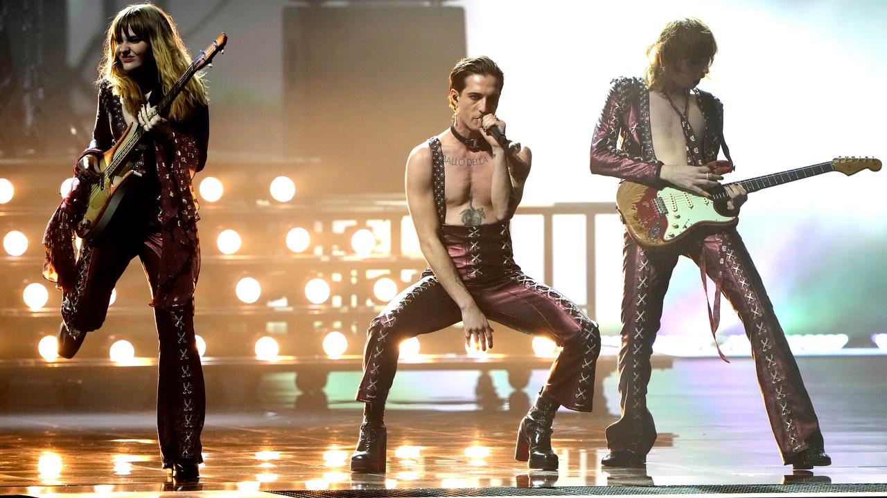

 ‘Dick Clark’s New Year’s Rockin’ Eve’ Ratings Crash NBC’s Miley Cyrus Party, CBS’ Nashville Bash
‘Dick Clark’s New Year’s Rockin’ Eve’ Ratings Crash NBC’s Miley Cyrus Party, CBS’ Nashville Bash
NBC’s inaugural “Miley’s New Year’s Eve Party, Hosted by Miley Cyrus and Pete Davidson” came in a distant second, drawing 6.3 million viewers from 11:30 p.m.-12:30 a.m. Throughout the Miami bash’s entire runtime, which kicked off at 10:30, it landed 5.8 million viewers, a 1.9 key demo rating and a 1.5 in adults 18-34. Cyrus’ event trended the most among NYE specials on Twitter. Over on CBS, the broadcast network’s latest attempt at a New Year’s Eve special, “New Year’s Eve Live: Nashville’s Big Bash,” placed third during the ball-drop time span of 11:30 p.m.-12:29 a.m., with 5.2 million viewers, a 1.1 key demo rating and a 0.7 among adults 18-34. It should be noted that unlike “Miley’s New Year’s Eve Party,” CBS’ “Big Bash” ran throughout both primetime and the “late-night” time slot, putting up an average of 4.8 million viewers from 8-11 p.m. That is not shabby in comparison to the 6.8 million brought in by ABC’s primetime portion of “Dick Clark’s New Year’s Rockin’ Eve,” and easily bests the 3.3 million combined viewers that NBC’s “2021: It’s Toast!” special and the first half hour of Cyrus and Davidson got during that same block.
Hayley Williams Hints at Paramore Comeback In 2022: ‘See You Sometime Next Year?’
Hayley Williams has withdrawn from social media, but the Paramore frontwoman wrote a heartfelt message via newsletter on Sunday (Nov. 28) to thank her bandmates for their support with her two solo albums — 2020’s Petals for Armor and 2021’s Flowers For Vases/Descansos — and teased a possible Paramore comeback for next year. Before closing out the newsletter, Williams thanked her fans for sticking with her over the years and teased that a Paramore album or comeback is imminent. Paramore’s last release was in 2017 with After Laughter — the album charted at No. 6 on the Billboard 200 and went No. 1 on the Top Rock Albums chart following its release. “Before I go, thank y’all so much for the incredible support these last couple years. I know we didn’t get to properly come together to sing and vent and sweat it all out…but I do think that Petals and descansos lived exactly the lives they were meant to. Besides, Paramore can’t be ‘on a break’ forever now can we? I love y’all. See you sometime next year?” the singer concluded. Williams revealed that she was ready to get back into the studio with fellow band members Zac Farro and Taylor York back in February while talking to a fan on Twitter about her Flowers for Vases project.
Taylor Swift releases 'Red (Taylor's Version),' an expanded rerecording of her classic 2012 album
On Friday, the Grammy award-winning singer unveiled "Red (Taylor's Version)," a rerecording of her acclaimed 2012 album "Red," as part of her ongoing mission to regain ownership of her early music. While the original album was 16 tracks, "Red (Taylor's Version)" is an epic 30 tracks, featuring musical collaborations with Phoebe Bridgers, Gary Lightbody, Ed Sheeran and Chris Stapleton. It also includes nine previously unreleased songs that didn't make the final product in 2012. Writing specifically about the long-lost 10-minute version of "All Too Well," he said Swift "takes her own masterpiece, tears it all up, breaks it like a promise, shreds her tapestry, and rebuilds it into a new heartbreak epic, twice as long and twice as mad." Red (Taylor's Version)" is the second in the series for Swift's rerecording project. In April this year, she topped the Billboard 200 chart with "Fearless (Taylor's Version)," which was the reworking of her 2008 sophomore album, "Fearless." Superstar manager Scooter Braun acquired the master recordings of Swift's first six albums in 2019, despite her objections. Swift confirmed in a Twitter post in November last year that the masters have since been sold to Shamrock Holdings. Following the release of "Red (Taylor's Version)," Swift thanked fans for inspiring her to reclaim her art, telling her 89 million Twitter followers: "It never would have been possible to go back & remake my previous work, uncovering lost art & forgotten gems along the way if you hadn't emboldened me. Red is about to be mine again, but it has always been ours. Now we begin again."
 How four ’70s-obsessed Italians became America’s favorite new rock band
How four ’70s-obsessed Italians became America’s favorite new rock band
The four members of the Italian rock band Måneskin grew up gigging around the Eternal City of Rome. But when they flew into L.A. for their first sold-out gig at the Roxy in early November, there was one local site of Saturnalian bad behavior they just had to visit. “The Rainbow Bar!” bassist Victoria De Angelis shouted when asked about which local rock ’n’ roll haunts the band had to see on its first trip to the West Coast. “I grew up on metal and glam rock, so we were all sitting on the couch in there, like, ‘This is where Lemmy and Mötley Crüe used to hang out.’” Måneskin is an almost unnervingly lithe band of 20-somethings who can squeeze into ’70s David Bowie bodysuits (or, as is often the case at photo shoots, squeeze out of them). It emerged victorious at 2021’s Eurovision Song Contest that, decades earlier, gave the world ABBA and Celine Dion; on Friday, it’ll help ring in 2022 on “Dick Clark’s New Year’s Rockin’ Eve With Ryan Seacrest.”
Tove Lo confirms new music is arriving in early 2022
Over the past few months Tove Lo has been giving fans updates on her new music, and after revealing in October that she had nearly finished writing her new album, Tove Lo has confirmed on Instagram that new music is dropping early next year. Tove Lo wrote, "I’ll start putting out music early 2022 :) ARE YOU EXCITED? I miss u." Her last album was 2019's Sunshine Kitty. Back in April Charli XCX teased that she had been making "the best music ever" with Tove Lo in Palm Springs. In July Tove Lo hopped on Kito's remix of MARINA's "Venus Fly Trap".
'Abba saved 2021' - why the Swedish band have not gone out of fashion
The Swedish pop legends joined the social media network - whose users are mostly under 30 - on Monday in anticipation of their highly-anticipated announcement of long-awaited new material. In less than five days, their official account has amassed almost a million followers and the nine videos they have posted so far have been viewed almost 30 million times. Pop stars like Mabel and Zara Larsson have posted covers on the platform since Abba officially joined. "It's clear from the vast numbers of creations and video views that our community around the world has so much love for the band and their sound," says Paul Hourican, TikTok's UK head of music operations. Only a few artists have music that is truly timeless, and which remains as fresh and brilliant and beautiful 40 or 50 years on as it was on the day it was first released. Abba are very close to the top of that list. While some of the new generation of fans have discovered the band on social media - the TikTok #DancingQueenChallenge had more than160 million views earlier this year - many were weaned on the music by their parents or fell in love with them through the Mamma Mia! films and stage show. If proof was needed of their endurance, Abba Gold was the UK's 20th best-selling album in the first six months of 2021 and recently became the first LP to spend 1,000 weeks in the UK top 100 album chart.